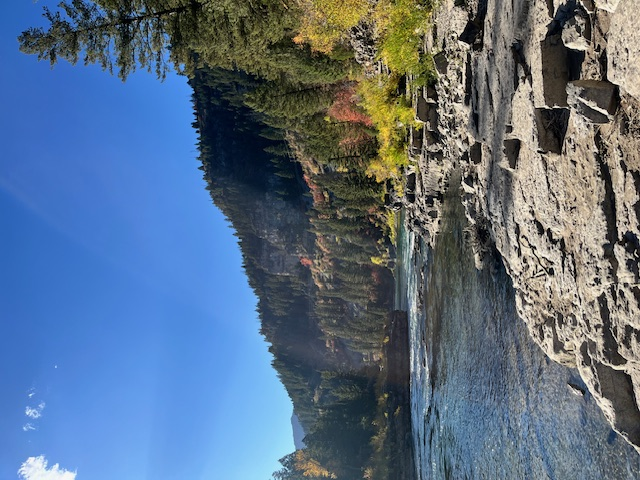

Alpine Trail Guide

Lunch Counter
Length: 0.4 miles
Time: 10 minutes
Difficulty: Easy
This trail leads down to one of the most famous rapids of the Snake River: The Lunch Counter. It can be quite fun to watch tourists and locals kayak, white water raft, or even surf the wave during the summer.
The trail is moderately steep but not long or dangerous. The bottom is very rocky and offers great views of the river and surrounding nature. Its namesake is not for nothing, either, and it's a great place to go on a picnic.